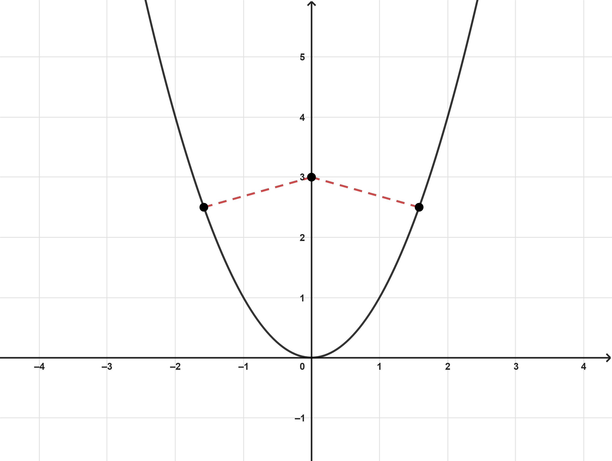

Example 4.15.1. Minimizing the Distance from a Point to a Parabola.

Solution.
Let \((x, x^2)\) be a point on the parabola. The distance between this point and \((0, 3)\) is given by
\begin{equation*}
D = \sqrt{(x - 0)^2 + (x^2 - 3)^2}.
\end{equation*}
Since distance is always positive, minimizing \(D\) is equivalent to minimizing \(D^2.\) Therefore, we need to minimize
\begin{equation*}
D^2 = (x-0)^2 + (x^2 - 3)^2.
\end{equation*}
Simplifying the equation, we get
\begin{align*}
D^2\amp= (x-0)^2 + (x^2 - 3)^2 \\\\
D^2\amp= x^2 + (x^4 - 6x^2 + 9) \\\\
D^2\amp= x^4 - 5x^2 + 9
\end{align*}
Notice that this equation is quadratic in form. Let \(u = x^2\) and \(u^2=(x^2)^2=x^4\text{.}\) This implies that
\begin{equation*}
D^2 = u^2 - 5u + 9.
\end{equation*}
Since this is a quadratic function with \(a >0\text{,}\) we know that the vertex is both a local and absolute minimum. Therefore, the value of \(k\) is the minimum value of \(D^2\text{.}\) First, we have to find the value of \(h\text{:}\)
\begin{align*}
h\amp= -\frac{b}{2a} \\\\
\amp= -\frac{-5}{2(1)} \\\\
\amp= \frac{5}{2}
\end{align*}
Now, we let \(u = h=\frac{5}{2}\) and substitute into the equation for \(D^2\) to find the value of \(k\text{:}\)
\begin{align*}
k\amp= \left(\frac{5}{2}\right)^2 - 5\left(\frac{5}{2}\right) + 9 \\\\
\amp= \frac{25}{4} - \frac{50}{4} + \frac{36}{4} \\\\
\amp= \frac{11}{4}\\
\end{align*}
Thus, the minimum value of \(D^2\) is \(\frac{11}{4}\text{,}\) and the minimum distance is
\begin{align*}
D\amp= \sqrt{D^2} \\\\
D\amp= \sqrt{\frac{11}{4}} \\\\
D\amp= \frac{\sqrt{11}}{\sqrt{4}} \\\\
\amp= \frac{\sqrt{11}}{2}
\end{align*}